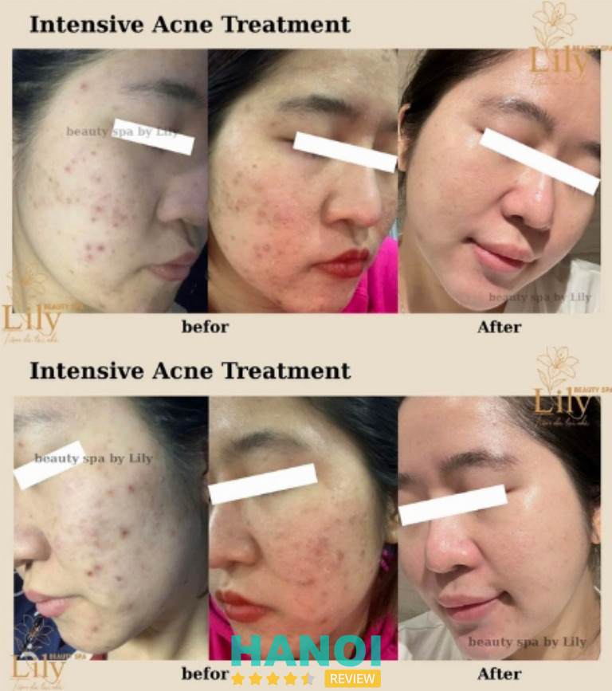
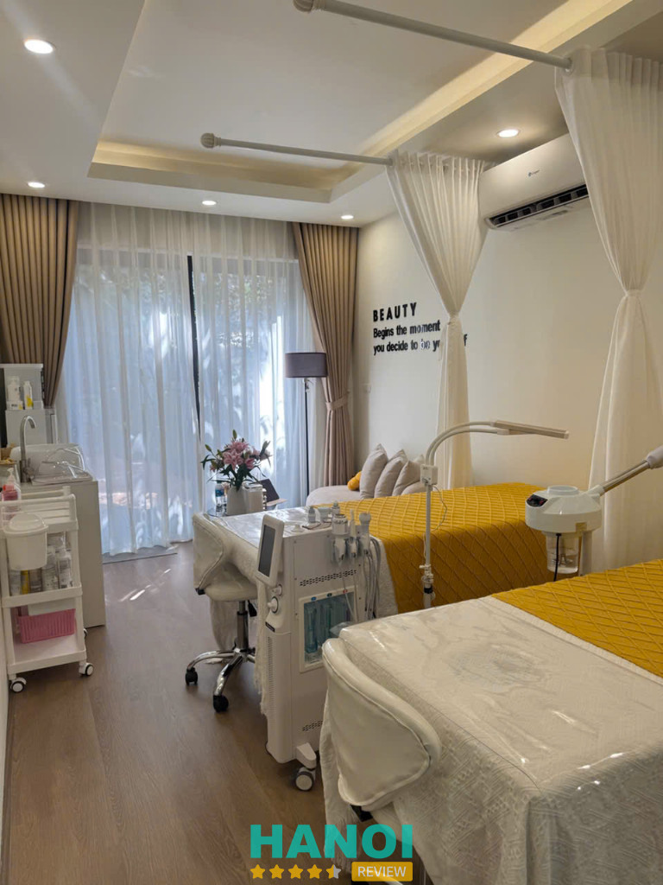
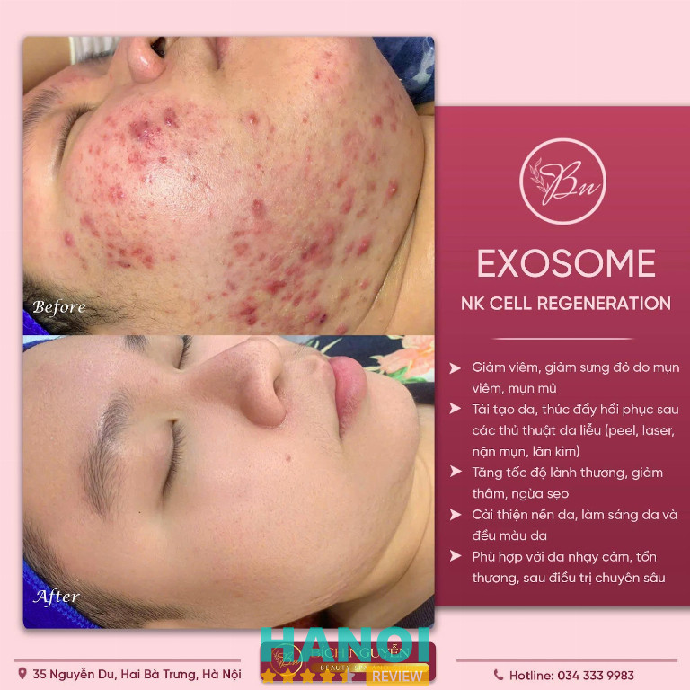
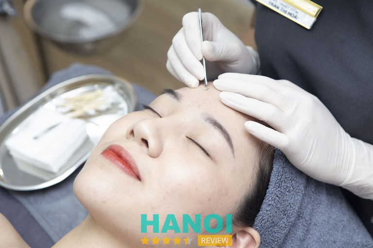
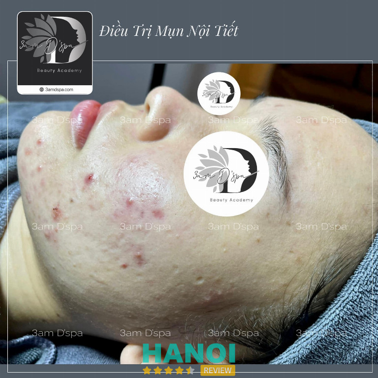
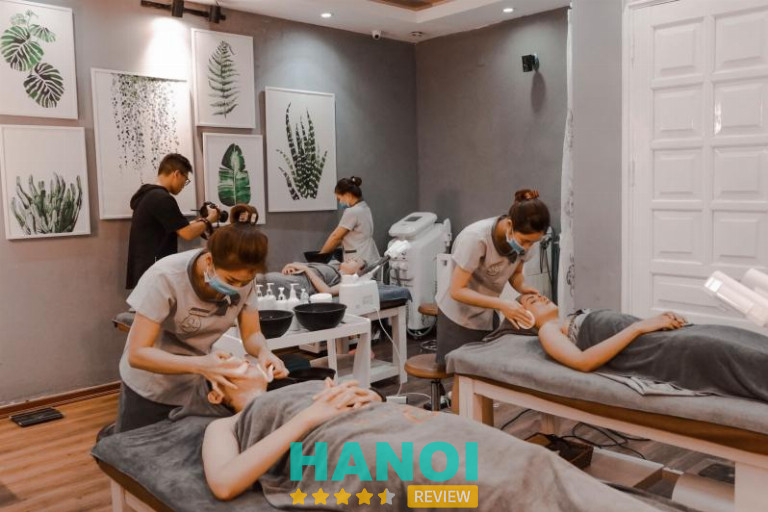
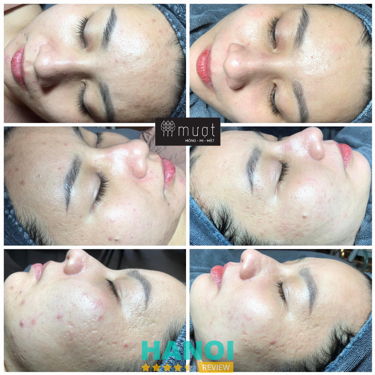
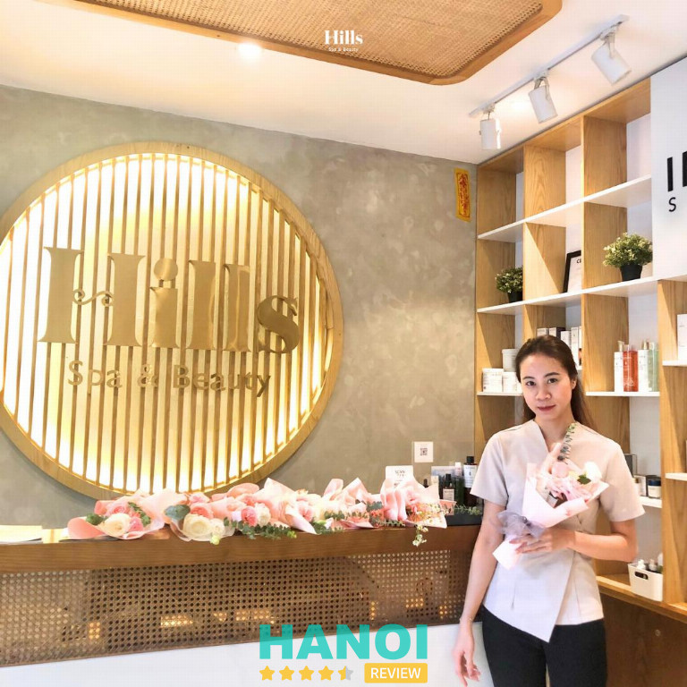
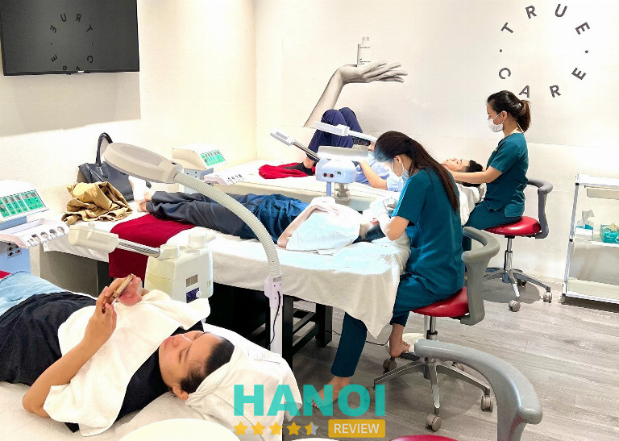
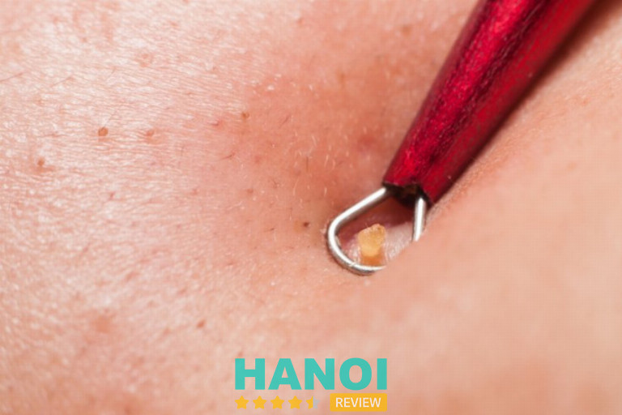

12 Địa chỉ nặn lấy nhân mụn tại Hà Nội uy tín, hiệu quả, đã nhất
Việc tìm kiếm một địa chỉ uy tín để nặn mụn tại Hà Nội là một điều mà nhiều người quan tâm. Với sự xuất hiện ngày càng nhiều spa và thẩm mỹ viện, việc lựa chọn một nơi đáng tin cậy và hiệu quả trở nên khó khăn hơn bao giờ hết.
Top 12 địa chỉ nặn lấy nhân mụn ở Hà Nội hiệu quả
Để tránh những rủi ro ” tiền mất tật mang ” chị em nên lựa chọn cơ sở uy tín để điều trị mụn. Dưới đây là 12 địa chỉ nặn lấy nhân mụn ở Hà Nội hiệu quả bạn có thể tham khảo
Tiệm DA Tại Nhà – Lily Beauty
Trong những năm gần đây, mô hình home spa – spa được thiết kế và vận hành ngay tại nhà – ngày càng được ưa chuộng nhờ sự riêng tư, tiện lợi và hiệu quả. Giữa rất nhiều lựa chọn tại Hà Nội, Tiệm DA Tại Nhà – Lily Beauty nổi bật như một địa chỉ đáng tin cậy, chuyên chăm sóc và điều trị da mụn theo chuẩn y khoa, giúp hàng trăm khách hàng lấy lại làn da sáng khỏe, mịn màng.

Home spa chuẩn y khoa – Giải pháp tối ưu cho làn da mụn
Khác với các cơ sở làm đẹp thông thường, Tiệm DA Tại Nhà – Lily Beauty hoạt động theo mô hình home spa đạt chuẩn y khoa, kết hợp giữa không gian chăm sóc tại nhà và kỹ thuật chuyên sâu như ở spa chuyên nghiệp. Tại đây, khách hàng sẽ được soi da, phân tích tình trạng cụ thể trước khi tiến hành liệu trình.
Quy trình lấy nhân mụn chuẩn y khoa của tiệm được đánh giá cao nhờ:
- Sử dụng dụng cụ vô trùng tuyệt đối, đảm bảo an toàn 100%.
- Kỹ thuật nặn mụn nhẹ nhàng, hạn chế sưng viêm, không để lại thâm sẹo.
- Sát khuẩn – phục hồi da bằng dược mỹ phẩm chuyên dụng cao cấp.
- Tư vấn chăm sóc và theo dõi da sau điều trị để ngăn ngừa tái phát.
Không chỉ xử lý mụn hiệu quả, Lily Beauty còn cung cấp các liệu trình phục hồi da yếu, da nhạy cảm, và trẻ hóa da chuẩn Châu Âu, mang lại làn da tươi sáng, đàn hồi tự nhiên.
Không gian thư giãn – Trang thiết bị hiện đại
Là một home spa được đầu tư bài bản, Tiệm DA Tại Nhà – Lily Beauty có không gian rộng rãi, hiện đại và ấm cúng, tạo cảm giác thư thái tuyệt đối cho khách hàng. Phòng điều trị đều được trang bị đầy đủ máy móc hiện đại công nghệ tiên tiến, nhập khẩu từ các thương hiệu uy tín, giúp tăng hiệu quả hấp thụ dưỡng chất và phục hồi da nhanh hơn.
Toàn bộ sản phẩm sử dụng trong quá trình điều trị đều là dược mỹ phẩm an toàn, lành tính, phù hợp với mọi loại da. Đặc biệt, các dụng cụ và khăn bông được khử khuẩn, tiệt trùng nghiêm ngặt, đảm bảo vệ sinh và an toàn tuyệt đối cho người sử dụng.

Chuyên viên tận tâm – Dịch vụ chu đáo, thân thiện
Một trong những yếu tố làm nên thương hiệu của Tiệm DA Tại Nhà – Lily Beauty chính là chuyên viên giỏi chuyên môn, giàu kinh nghiệm thực tế. Không chỉ am hiểu kiến thức da liễu, chuyên viên còn luôn tư vấn chân thành, phục vụ chu đáo và vui vẻ, giúp khách hàng cảm thấy thoải mái, được lắng nghe và chăm sóc tận tình trong suốt liệu trình.
Mỗi khách hàng tại Lily Beauty đều có phác đồ chăm sóc riêng biệt, được theo dõi cẩn thận để đảm bảo đạt kết quả tốt nhất – làn da sạch mụn, sáng khỏe và căng bóng tự nhiên.
Giá dịch vụ hợp lý, minh bạch – Trải nghiệm trọn vẹn
Lily Beauty luôn cam kết mang đến mức giá rõ ràng, minh bạch và tương xứng với chất lượng. Mọi chi phí đều được thông báo trước, không phát sinh ngoài gói, giúp khách hàng yên tâm tận hưởng dịch vụ.
Với sự kết hợp giữa tay nghề chuyên nghiệp, thiết bị hiện đại và không gian thư giãn chuẩn spa, Tiệm DA Tại Nhà – Lily Beauty xứng đáng là một trong những địa chỉ nặn lấy nhân mụn tại Hà Nội uy tín, hiệu quả và được yêu thích nhất hiện nay.
Thông tin liên hệ:
- Địa chỉ: 38E Ngõ 40 Phố Chính Kinh, Phường Thanh Xuân, Hà Nội (xem bản đồ đường đi)
- Số điện thoại: 0398 313 997
- Facebook: Tiệm DA Tại Nhà
- Thời gian hoạt động: 09:00 – 19:00
Xem thêm: 5 Thẩm mỹ viện tại quận Ba Đình dịch vụ chất lượng, giá tốt
Bích Nguyễn Beauty Spa And Clinic
Trong hành trình chăm sóc da, mụn luôn là nỗi ám ảnh khó dứt. Điều trị nhiều nơi nhưng mụn vẫn quay lại, thậm chí để lại thâm sẹo khiến bạn mất tự tin. Giữa vô vàn lựa chọn tại Hà Nội, Bích Nguyễn Beauty Spa And Clinic nổi bật là địa chỉ được đông đảo khách hàng tin tưởng nhờ phương pháp hiện đại, cam kết rõ ràng và dịch vụ tận tâm.
Phác đồ trị mụn Nhật Bản – Giải pháp khác biệt
Điểm nhấn lớn nhất tại Bích Nguyễn Beauty Spa And Clinic chính là phác đồ trị mụn chuẩn Nhật Bản. Quy trình không chỉ tập trung lấy sạch nhân mụn mà còn phục hồi, cân bằng làn da từ gốc. Đặc biệt, spa không sử dụng thuốc uống ức chế, nhờ vậy khách hàng tránh được rủi ro ảnh hưởng sức khỏe, đồng thời duy trì làn da khỏe mạnh, sáng mịn một cách tự nhiên.
Cam kết không tái phát – Hiệu quả lâu dài
Không chỉ xử lý nhân mụn, Bích Nguyễn Beauty Spa And Clinic cam kết mang đến kết quả ổn định, không tái phát. Mỗi khách hàng được xây dựng lộ trình riêng biệt, phù hợp với tình trạng da và được theo dõi sát sao trong suốt quá trình. Sự kết hợp giữa kỹ thuật chuẩn y khoa và liệu trình chăm sóc chuyên sâu giúp da duy trì sự ổn định, không lo mụn quay trở lại.
Quy trình an toàn – Không sẹo, không thâm
Tại Bích Nguyễn Beauty Spa And Clinic, kỹ thuật lấy nhân mụn được thực hiện tỉ mỉ, chuẩn xác, giảm thiểu tối đa tổn thương da. Sau khi xử lý, khách hàng được áp dụng bước làm dịu, dưỡng ẩm và phục hồi bằng sản phẩm chuyên biệt. Nhờ vậy, không để lại sẹo, không vết thâm, da nhanh chóng phục hồi và đều màu hơn.
Đội ngũ chuyên môn – Tận tâm, giàu kinh nghiệm
Một yếu tố quan trọng làm nên uy tín của Bích Nguyễn Beauty Spa And Clinic là đội ngũ chuyên viên tay nghề cao, am hiểu chuyên sâu về da liễu và thẩm mỹ. Không chỉ giỏi kỹ thuật, họ còn tận tâm lắng nghe, tư vấn và đồng hành cùng khách hàng trong suốt liệu trình. Chính sự nhiệt huyết và chuyên nghiệp này đã giúp hàng nghìn khách hàng lấy lại làn da tự tin.

Không gian & sản phẩm – Nâng tầm trải nghiệm
Không gian tại Bích Nguyễn Beauty Spa And Clinic được thiết kế hiện đại, ấm cúng, mang đến cảm giác thư giãn và riêng tư tuyệt đối. Mỗi phòng trị liệu đều được trang bị đầy đủ thiết bị đạt chuẩn. Bên cạnh đó, spa sử dụng sản phẩm cao cấp, nguồn gốc rõ ràng, an toàn cho da nhạy cảm, đảm bảo hiệu quả tối ưu mà vẫn thân thiện với làn da.
Vì sao nên chọn Bích Nguyễn Beauty Spa And Clinic?
- Phác đồ Nhật Bản hiện đại, không phụ thuộc thuốc uống.
- Cam kết trị mụn tận gốc, không tái phát.
- Quy trình chuẩn y khoa, an toàn, không sẹo thâm.
- Đội ngũ chuyên môn giàu kinh nghiệm, tận tâm với khách hàng.
- Không gian sang trọng, sản phẩm cao cấp, an toàn tuyệt đối.
- Giá hợp lý, phù hợp với mọi khách hàng, chỉ từ 180.000/buổi.
Nếu bạn đang tìm một nơi điều trị mụn hiệu quả, uy tín và bền vững tại Hà Nội, thì Bích Nguyễn Beauty Spa And Clinic chính là lựa chọn đáng tin cậy. Với phác đồ Nhật Bản, đội ngũ chuyên môn tận tâm, không gian hiện đại và cam kết rõ ràng, spa không chỉ mang đến làn da sạch mụn mà còn giúp bạn thật sự thoải mái, tự tin tỏa sáng.
Thông tin liên hệ:
- Địa chỉ: 35 Nguyễn Du, Q. Hai Bà Trưng, TP. Hà Nội (xem bản đồ đường đi)
- Số điện thoại: 0343 339 983
- Email: ngocbich.beautyclinic@gmail.com
- Fanpage: Bích Nguyễn Beauty Spa and Clinic
Bệnh viện Thẩm mỹ Kangnam
Nếu đang tìm kiếm một địa chỉ nặn mụn và lấy nhân mụn hiệu quả tại Hà Nội, Bệnh viện Thẩm mỹ Kangnam chính là lựa chọn hàng đầu. Kangnam là hệ thống thẩm mỹ danh tiếng trên toàn quốc, được biết đến với nhiều dịch vụ làm đẹp và thẩm mỹ cao cấp, bao gồm cả dịch vụ nặn mụn và lấy nhân mụn. Đây là địa chỉ được nhiều khách hàng tin tưởng và ưu ái lựa chọn khi cần cải thiện làn da.
Kangnam nổi bật với hệ thống trang thiết bị hiện đại, tiên tiến, được nhập khẩu trực tiếp từ các quốc gia hàng đầu về công nghệ thẩm mỹ. Các thiết bị này không chỉ đảm bảo hiệu quả cao trong quá trình điều trị mà còn mang lại sự an toàn tuyệt đối cho khách hàng.
Công nghệ trị mụn Nano Skin hiện đại tại Kangnam có khả năng đánh bay tất cả các loại mụn chỉ trong một liệu trình duy nhất. Điều này giúp tiết kiệm thời gian và công sức cho khách hàng, đồng thời mang lại làn da mịn màng, sáng khỏe.
Đội ngũ chuyên gia và bác sĩ tại đây đều là những người có kinh nghiệm lâu năm, được đào tạo chuyên sâu và có kiến thức vững vàng về các dịch vụ thẩm mỹ. Họ luôn tận tâm, lắng nghe và hiểu rõ nhu cầu của từng khách hàng, từ đó đưa ra những giải pháp tối ưu nhất.
Dịch vụ nặn mụn và lấy nhân mụn tại Kangnam được đánh giá cao về chất lượng. Quy trình thực hiện được tiến hành một cách tỉ mỉ, nhẹ nhàng và ít gây đau nhức. Sau khi nặn mụn, khách hàng sẽ được chăm sóc kỹ lưỡng để giảm thiểu tình trạng sưng tấy, đau đớn, đảm bảo mang lại sự thoải mái tối đa.
Công nghệ cao tại Kangnam giúp điều trị mụn hiệu quả, bao gồm mụn trứng cá, mụn cám, mụn bọc, mụn mủ, mụn đầu đen và mụn đầu trắng. Công nghệ Nano Skin không chỉ loại bỏ mụn tận gốc mà còn ngăn ngừa mụn quay trở lại, mang lại làn da sạch mụn và khỏe mạnh. Đây là giải pháp lý tưởng cho những ai đang gặp vấn đề về mụn và mong muốn tìm lại làn da tươi sáng, mịn màng.
Bệnh viện Thẩm mỹ Kangnam là địa chỉ lý tưởng cho dịch vụ nặn mụn và lấy nhân mụn hiệu quả tại Hà Nội. Với trang thiết bị hiện đại, đội ngũ bác sĩ giàu kinh nghiệm và dịch vụ chăm sóc tận tâm, Kangnam cam kết mang lại cho khách hàng làn da mịn màng.
Thông tin liên hệ:
- Địa chỉ: 190A+B Trường Chinh, Khương Thượng, Q. Đống Đa, Hà Nội
- Điện thoại: 024 7300 6466 – 0948 44 99 88
- Bác sĩ tư vấn (24/7): 1900 6466
- Website: benhvienthammykangnam.vn
- Fanpage: FB.com/Thammykangnam
Spa Hải Anh
Khi nhắc đến những địa chỉ nặn lấy nhân mụn uy tín và hiệu quả tại Hà Nội, không thể không kể đến Spa Hải Anh. Với lịch sử phát triển lâu năm trong lĩnh vực chăm sóc da và điều trị mụn, Spa Hải Anh đã trở thành điểm đến tin cậy của nhiều khách hàng, đặc biệt là các chị em phụ nữ mong muốn có làn da khỏe mạnh, sạch mụn.
Đội ngũ y bác sĩ và chuyên viên thẩm mỹ tại Spa Hải Anh đều có trình độ chuyên môn cao, được đào tạo bài bản và có nhiều năm kinh nghiệm trong lĩnh vực điều trị mụn. Với sự tận tâm và chu đáo, họ luôn lắng nghe và tư vấn kỹ lưỡng cho từng khách hàng, từ đó đưa ra các phác đồ điều trị phù hợp và hiệu quả nhất.

Thẩm mỹ viện An Khánh áp dụng nhiều phương pháp nặn mụn tiên tiến, kết hợp giữa liệu pháp thiên nhiên và công nghệ hiện đại. Các phương pháp điều trị tại đây đều được nghiên cứu kỹ lưỡng và chứng minh hiệu quả, giúp mang lại làn da mịn màng, sạch mụn.
- Peel da phục hồi: Phương pháp peel da tại Thẩm mỹ viện An Khánh sử dụng các sản phẩm cao cấp từ các thương hiệu nổi tiếng như Image, Thermoceutical, Murad… giúp tái tạo da, làm sạch sâu và phục hồi các vùng da bị tổn thương do mụn.
- Tiêm cấy Hyaluronic Acid và tinh chất cá hồi: Đây là các liệu pháp tiêm cấy dưỡng chất sâu dưới da, giúp cung cấp độ ẩm, tăng cường đàn hồi và làm sáng da. Đặc biệt, liệu pháp này còn giúp da nhiễm độc corticoid hoặc da bị tổn thương do sử dụng rượu lột trong thời gian dài trở nên khỏe mạnh và tươi tắn hơn.
- Điện di Vitamin C và Aqua Solution: Các liệu pháp này giúp làm sáng da, giảm thâm và ngăn ngừa mụn tái phát bằng cách cung cấp dưỡng chất và vitamin cần thiết cho da.
Ngoài dịch vụ nặn mụn và lấy nhân mụn, Thẩm mỹ viện An Khánh còn cung cấp nhiều dịch vụ chăm sóc da khác như: điện di Meso, bắn than hoạt tính, cấy tảo xoắn, và nhiều liệu pháp trẻ hóa da khác. Để đảm bảo trải nghiệm dịch vụ tốt nhất, khách hàng nên đặt lịch hẹn trước từ 2-3 ngày.
Với cam kết mang lại làn da khỏe mạnh, sạch mụn và sự tự tin cho khách hàng, Thẩm mỹ viện An Khánh chắc chắn là địa chỉ không thể bỏ qua khi bạn đang tìm kiếm một nơi điều trị mụn uy tín tại Hà Nội.
Thông tin liên hệ:
- Địa chỉ: 51 ngõ 40 Ngụy Như Kon Tum, Thanh Xuân, Hà Nội
- Điện thoại: 0975 150 010
- Email: spahaianhtrimun@gmail.com
- Website: haianhspa.vn
- Fanpage: FB.com/spahaianhtrimun/
- Giờ mở cửa: 09:00 – 19:30
Ẩm Clinic & Spa
Ẩm Clinic & Spa là một địa chỉ nổi tiếng về dịch vụ nặn mụn và lấy nhân mụn hiệu quả tại Hà Nội. Với kỹ thuật nặn mụn chuyên nghiệp, nhẹ nhàng và ít đau, cùng với sự chăm sóc tận tình trước và sau khi thực hiện, Ẩm Clinic & Spa đã trở thành điểm đến lý tưởng cho những ai muốn cải thiện làn da của mình.
Trang thiết bị hiện đại tại Ẩm Clinic & Spa là một trong những yếu tố quan trọng tạo nên sự khác biệt. Các thiết bị được đầu tư kỹ lưỡng, đảm bảo an toàn và hiệu quả cao trong quá trình điều trị mụn.
Quy trình nặn mụn tại Luxurious Clinic & Spa được thực hiện một cách tỉ mỉ, khoa học và đúng kỹ thuật, giúp loại bỏ nhân mụn một cách hiệu quả và an toàn. Quy trình này bao gồm các bước như sau:
- Tẩy trang: Loại bỏ lớp trang điểm và bụi bẩn trên da, chuẩn bị cho quá trình làm sạch sâu.
- Rửa mặt: Sử dụng sữa rửa mặt chuyên dụng để loại bỏ các tạp chất và bụi bẩn còn sót lại.
- Xông hơi: Giúp giãn nở lỗ chân lông, làm mềm da và tạo điều kiện thuận lợi cho việc lấy nhân mụn.
- Lấy nhân mụn: Sử dụng kỹ thuật và dụng cụ chuyên dụng để lấy nhân mụn một cách nhẹ nhàng, ít gây đau đớn.
- Chiếu đèn diệt khuẩn: Làm dịu vết thương, giảm sưng viêm và tiêu diệt vi khuẩn, ngăn ngừa mụn tái phát.
- Đắp mặt nạ dưỡng da: Cung cấp dưỡng chất, làm dịu và phục hồi da sau khi lấy nhân mụn.
Đội ngũ y bác sĩ và chuyên gia tại Ẩm Clinic & Spa đều là những người có kinh nghiệm, được đào tạo bài bản và am hiểu sâu sắc về các phương pháp điều trị mụn. Họ luôn lắng nghe và tư vấn tận tình cho từng khách hàng, đưa ra những liệu trình phù hợp nhất với tình trạng da cụ thể.
Mức giá cho một buổi nặn mụn, lấy nhân mụn tại Ẩm Clinic & Spa dao động từ 200.000 đến 500.000 VNĐ, tùy thuộc vào tình trạng da của từng khách hàng. Mức giá này được đánh giá là hợp lý, tương xứng với chất lượng dịch vụ và hiệu quả điều trị mà spa mang lại.
Với quy trình điều trị mụn khoa học, kỹ thuật nặn mụn chuẩn xác và sự chăm sóc tận tâm, Ẩm Clinic & Spa cam kết mang lại cho khách hàng làn da sạch mụn, khỏe mạnh và tự tin. Hãy đến Ẩm Clinic & Spa để trải nghiệm dịch vụ nặn mụn và lấy nhân mụn hiệu quả nhất tại Hà Nội.
Thông tin liên hệ:
- Địa chỉ: Số nhà 11, Ngõ 2, Nguyễn Chánh, Trung Hòa, Q. Cầu Giấy, Hà Nội
- Điện thoại: 0969 012 186
- Fanpage: FB.com/amspatrimuntangoc
3am D’spa
Nếu bạn đang tìm kiếm một địa chỉ nặn lấy nhân mụn hiệu quả tại Hà Nội, thì 3am D’spa là một lựa chọn không thể bỏ qua. Được biết đến là một spa uy tín, 3am D’spa không chỉ cung cấp dịch vụ điều trị mụn tốt mà còn chăm sóc khách hàng một cách toàn diện từ bề mặt da đến nội tiết tố.
Điểm đặc biệt của 3am D’spa chính là phương pháp điều trị mụn khoa học và chuyên nghiệp. Đội ngũ y bác sĩ và chuyên gia da liễu tại đây sử dụng các phương pháp điều trị mụn tiên tiến, đảm bảo an toàn và hiệu quả. Thay vì chỉ tập trung vào việc nặn lấy nhân mụn, spa tập trung vào việc xử lý những nốt mụn đã có thể nặn được, tránh tình trạng mụn lên nhiều hơn hoặc không lấy được hết nhân, gây sưng, viêm.

Khác biệt với các spa khác, 3am D’spa không chỉ dừng lại ở việc điều trị mụn trên bề mặt da, mà còn đề xuất quy chuẩn chăm sóc da tại nhà cho khách hàng. Cùng với đó, spa còn áp dụng công nghệ trị mụn độc quyền, được nghiên cứu tỉ mỉ từ quy trình đến cách áp dụng sản phẩm, đảm bảo mang lại hiệu quả cao nhất.
Bên cạnh dịch vụ điều trị mụn, 3am D’spa còn cung cấp nhiều dịch vụ chăm sóc da khác như làm móng, vi kim tảo biển, lăn kim tế bào gốc, cấp DNA Cá Hồi, Điện di, trị thâm sau mụn, Căng bóng da, Bổ sung Collagen, dưỡng ẩm, thu nhỏ lỗ chân lông, triệt lông… Tất cả những dịch vụ này được thực hiện bởi đội ngũ chuyên gia giàu kinh nghiệm và được đào tạo chuyên sâu, đảm bảo mang lại sự hài lòng và tin tưởng cho khách hàng.
Với trang thiết bị hiện đại và đội ngũ y bác sĩ, chuyên gia da liễu chuyên nghiệp, 3am D’spa không chỉ là địa chỉ nặn lấy nhân mụn hiệu quả tại Hà Nội mà còn là điểm đến lý tưởng cho những ai muốn chăm sóc da một cách toàn diện và an toàn.
Thông tin liên hệ:
- Địa chỉ: 67 Trần Xuân Soạn, Hai Bà Trưng, Hà Nội
- Điện thoại: 0937 402 828
- Email: 3amdspa@icloud.com
- Website: 3amdspa.com
- Fanpage: FB.com/3amdspa
Shi Beauty & Spa
Shi Beauty & Spa là một trong những địa chỉ nặn và lấy nhân mụn uy tín hàng đầu tại Hà Nội, được sáng lập và điều hành bởi đội ngũ lãnh đạo dày dặn kinh nghiệm trong lĩnh vực chăm sóc sức khỏe thẩm mỹ và làm đẹp.
Với sự kết hợp giữa công nghệ tiên tiến, trang thiết bị hiện đại và đội ngũ chuyên gia, bác sĩ giàu kinh nghiệm, Shi Beauty & Spa cam kết mang đến cho khách hàng những dịch vụ chăm sóc da chất lượng cao và hiệu quả.
Trang thiết bị tại Shi Beauty & Spa đều là những công nghệ mới nhất, được nhập khẩu từ các quốc gia tiên tiến, đảm bảo độ an toàn và hiệu quả cao.

Các thiết bị này không chỉ giúp xử lý các vấn đề về da mặt như mụn đầu đen, mụn đầu trắng, mụn trứng cá, mụn viêm, mụn mủ mà còn giúp cải thiện tình trạng da, làm sạch sâu và đào thải chất độc từ bên trong. Nhờ vào sự hỗ trợ của trang thiết bị hiện đại, liệu trình điều trị mụn tại đây thường mang lại kết quả dứt điểm chỉ sau một liệu trình.
Mỗi khách hàng khi đến đây đều được thăm khám kỹ lưỡng và tư vấn phác đồ điều trị phù hợp với tình trạng da của mình. Quy trình điều trị mụn chuyên sâu, mỗi bước trong quy trình đều được thực hiện tỉ mỉ và chính xác, đảm bảo hiệu quả cao nhất và mang lại làn da mịn màng, khỏe mạnh cho khách hàng.
Không chỉ nổi bật với chất lượng dịch vụ, Shi Beauty & Spa còn tạo ấn tượng mạnh mẽ với không gian sang trọng và thoáng đãng. Spa được thiết kế với tone màu trắng và vàng chủ đạo, kết hợp với nhiều cây xanh, mang lại cảm giác thư giãn và dễ chịu cho khách hàng.
Sản phẩm chăm sóc da tại Shi Beauty & Spa đều là các dòng mỹ phẩm cao cấp, được xách tay từ các thương hiệu nổi tiếng trên thế giới. Những sản phẩm này không chỉ an toàn cho da mà còn giúp nuôi dưỡng và cải thiện tình trạng da một cách hiệu quả.
Về giá dịch vụ, Shi Beauty & Spa luôn đưa ra mức giá hợp lý, phù hợp với chất lượng dịch vụ mà khách hàng nhận được. Dịch vụ nặn mụn và lấy nhân mụn có giá dao động tùy thuộc vào tình trạng da và liệu trình điều trị mà khách hàng lựa chọn. Mức giá này đảm bảo mang lại giá trị cao và sự hài lòng cho khách hàng.
Thông tin liên hệ:
- Địa chỉ: 154 Nghi Tàm, Yên Phụ, Hà Nội
- Điện thoại: 09444 7 3333 – (0243) 710 1188
- Fanpage: FB.com/ShiSpa.vn
- Website: ShiSpa.vn
Xem thêm: 5 Địa chỉ thu gọn, làm hẹp âm đạo tại Hà Nội cam kết hiệu quả
Mượt Spa
Khi nhắc đến các địa chỉ nặn mụn và lấy nhân mụn chất lượng tại Hà Nội, Mượt Spa chắc chắn là một cái tên không thể bỏ qua. Với thiết kế nhỏ gọn và xinh xắn gồm hai tầng, Mượt Spa mang lại không gian thoải mái và thân thiện cho khách hàng.
Trang thiết bị tại Mượt Spa được đầu tư hiện đại, đáp ứng các tiêu chuẩn cao về an toàn và vệ sinh. Các thiết bị xông hơi, chiếu đèn và dụng cụ lấy nhân mụn đều được nhập khẩu từ các nước có nền công nghệ tiên tiến, đảm bảo mang lại sự yên tâm cho khách hàng trong suốt quá trình điều trị. Mỗi lần sử dụng, các thiết bị đều được vệ sinh và khử trùng kỹ lưỡng, tránh nguy cơ lây nhiễm và bảo vệ tối đa cho da.
Nhân viên ở đây không chỉ có kỹ thuật điêu luyện, mà còn có thái độ ân cần, nhẹ nhàng với khách hàng. Họ luôn lắng nghe và thấu hiểu nhu cầu của từng người, cố gắng tạo ra sự thoải mái nhất trong suốt quá trình nặn mụn. Chính sự tận tâm và chuyên nghiệp này đã giúp Mượt Spa nhận được nhiều lời khen ngợi và đánh giá cao từ khách hàng.

Một điểm cộng lớn của Mượt Spa chính là chi phí hợp lý. Dịch vụ nặn mụn tại đây có mức giá phải chăng, chỉ từ 150.000 VNĐ mỗi buổi, phù hợp với nhiều đối tượng khách hàng.
Ngoài ra, Mượt Spa còn chú trọng đến chế độ chăm sóc sau khi nặn mụn. Khách hàng sẽ được tư vấn về cách chăm sóc da, sử dụng các sản phẩm phù hợp để giữ gìn và nuôi dưỡng làn da sau khi điều trị. Điều này giúp quá trình hồi phục da diễn ra nhanh chóng và hiệu quả, mang lại làn da khỏe mạnh và mịn màng.
Mượt Spa là một địa chỉ nặn mụn và lấy nhân mụn hàng đầu tại Hà Nội, với trang thiết bị hiện đại, đội ngũ nhân viên chuyên nghiệp và dịch vụ chất lượng cao. Với quy trình an toàn, kỹ thuật điêu luyện và chi phí hợp lý, Mượt Spa cam kết mang lại cho khách hàng những trải nghiệm tuyệt vời và hiệu quả điều trị mụn tốt nhất.
Thông tin liên hệ:
- Địa chỉ: 24 ngõ 139 phố Khương Thượng, Đống Đa, Hà Nội
- Điện thoại: 0985.812.499 – 0976918940
- Website: muotspa.vn
- Fanpage: FB.com/MuotSpa
Doctor Spa & Clinic
Doctor Spa & Clinic tự hào là một trong những thương hiệu hàng đầu trong lĩnh vực chăm sóc sắc đẹp và điều trị thẩm mỹ tại Hà Nội, đặc biệt với dịch vụ nặn lấy nhân mụn. Với nhiều năm hoạt động, Doctor Spa & Clinic đã phục vụ thành công cho hơn 10.000 khách hàng, cung cấp đa dạng các dịch vụ từ trị mụn, triệt lông, nâng cơ xóa nhăn, điều trị nám tàn nhang, đến phun môi.
Điểm mạnh nổi bật của Doctor Spa & Clinic chính là việc ứng dụng các công nghệ trị mụn tiên tiến đến từ Mỹ. Các công nghệ như ánh sáng E-light, Mesotherapy, và Peeling đã được triển khai hiệu quả, giúp làm sạch mụn dưới da và cải thiện rõ rệt làn da của khách hàng.
Công nghệ ánh sáng E-light có khả năng diệt khuẩn và giảm viêm, công nghệ Mesotherapy cung cấp dưỡng chất sâu vào da, còn Peeling giúp tái tạo bề mặt da, mang lại làn da sáng mịn, tươi trẻ.
Doctor Spa & Clinic sở hữu đội ngũ bác sĩ thẩm mỹ và nhân viên có chuyên môn cao, giàu kinh nghiệm và luôn tận tâm với khách hàng. Sự chăm sóc tận tình và chu đáo từ đội ngũ nhân viên chính là yếu tố quan trọng giúp Doctor Spa & Clinic ghi điểm trong lòng khách hàng.
Mức giá cho một buổi nặn mụn tại Doctor Spa & Clinic dao động từ 600.000 đến 900.000 VNĐ, phụ thuộc vào tình trạng da và dịch vụ cụ thể mà khách hàng yêu cầu. Đây là mức giá hợp lý, phản ánh chất lượng dịch vụ và sự chăm sóc tận tâm mà khách hàng nhận được.
Doctor Spa & Clinic đã và đang khẳng định vị thế của mình là địa chỉ nặn lấy nhân mụn hàng đầu tại Hà Nội. Với trang thiết bị hiện đại, công nghệ tiên tiến, không gian sang trọng và đội ngũ y bác sĩ chuyên nghiệp, Doctor Spa & Clinic cam kết mang đến cho khách hàng trải nghiệm làm đẹp tối ưu và hiệu quả nhất.
Thông tin liên hệ:
- Địa chỉ: 62 Cao Lỗ, Đông Anh, Hà Nội
- Điện thoại: 0965 898 588
- Email: mktdoctorspa@gmail.com
- Fanpage: FB.com/DoctorSpaClinic
Hills Beauty
Hills Beauty, một điểm đến lý tưởng cho những ai đang tìm kiếm dịch vụ nặn lấy nhân mụn chất lượng cao tại Hà Nội, đã khẳng định vị thế của mình trên thị trường làm đẹp suốt gần 3 năm qua. Dù chặng đường không dài, nhưng Hills Beauty đã minh chứng rõ ràng về chất lượng và uy tín của mình thông qua sự hài lòng của hàng ngàn khách hàng.
Spa tọa lạc trên một không gian rộng rãi, được thiết kế hiện đại với cơ sở vật chất và trang thiết bị tiên tiến. Toàn bộ hệ thống máy móc tại Hills Beauty đều được nhập khẩu trực tiếp từ các nước có nền công nghệ phát triển như Mỹ, Anh, và Pháp. Nhờ đó, Hills Beauty luôn cập nhật và áp dụng những công nghệ làm đẹp hiện đại nhất để phục vụ mọi nhu cầu thư giãn và chăm sóc da của khách hàng.
Điểm đặc biệt làm nên danh tiếng của Hills Beauty chính là đội ngũ nhân viên và kỹ thuật viên chuyên nghiệp. Tất cả đều có kinh nghiệm vững vàng, trình độ chuyên môn cao và thường xuyên tham gia các khóa đào tạo chuyên nghiệp để không ngừng nâng cao tay nghề.

Dịch vụ nặn mụn tại Hills Beauty được nhiều khách hàng tin tưởng và lựa chọn nhờ quy trình thực hiện bài bản, nhẹ nhàng và tỉ mỉ. Spa cam kết tuân thủ đầy đủ các bước cần thiết để đảm bảo hiệu quả tối đa mà không gây đau đớn hay tổn thương da.
Đặc biệt, những dịch vụ liên quan đến da đều áp dụng công nghệ peel da chuẩn y khoa 11 bước, giúp chăm sóc da từ cơ bản đến chuyên sâu, mang lại làn da mịn màng, tươi sáng.
Ngoài dịch vụ nặn mụn, Hills Beauty còn cung cấp nhiều dịch vụ chăm sóc da và cơ thể khác như massage body, chăm sóc cơ thể toàn diện, waxing, triệt lông công nghệ cao. Tất cả đều được thực hiện với sự tận tâm và chuyên nghiệp, giúp khách hàng có những trải nghiệm thư giãn và hài lòng nhất.
Một yếu tố quan trọng không thể không nhắc đến là chất lượng sản phẩm tại Hills Beauty. Spa sử dụng các dòng mỹ phẩm cao cấp, xách tay từ các thương hiệu uy tín ở Anh, Mỹ, Pháp… Các sản phẩm này đều đảm bảo an toàn tuyệt đối cho làn da của khách hàng, giúp chăm sóc và cải thiện làn da một cách hiệu quả.
Hills Beauty là địa chỉ nặn lấy nhân mụn tại Hà Nội không thể bỏ qua cho những ai mong muốn cải thiện làn da một cách hiệu quả và an toàn. Với cơ sở vật chất hiện đại, đội ngũ chuyên gia tận tâm và dịch vụ đa dạng, Hills Beauty chắc chắn sẽ mang lại sự hài lòng tuyệt đối cho mọi khách hàng.
Thông tin liên hệ:
- Số 37 Nguyễn Văn Huyên, Quận Cầu Giấy, Hà Nội
- Điện thoại: 091 660 33 99
- Webiste: hillsbeauty.vn
- Fanpage: FB.com/hillsbeauty
- Giờ mở cửa: 09:00 – 19:30
MD Medical Clinic & Spa
MD Medical Clinic & Spa nổi bật như một trung tâm trị liệu và chăm sóc da toàn diện, được thành lập vào năm 2017 bởi bác sĩ da liễu Nguyễn Xuân Quang và các cộng sự, MD Medical Clinic & Spa đã không ngừng khẳng định mình là địa chỉ uy tín trong việc mang lại vẻ đẹp hoàn mỹ và làn da sạch mụn cho chị em phụ nữ.
MD Medical Clinic & Spa không chỉ sở hữu cơ sở hạ tầng khang trang, mà còn trang bị đầy đủ hệ thống máy móc và thiết bị hiện đại. Các công nghệ tiên tiến được ứng dụng tại đây đến từ những nền y học phát triển như Mỹ, Đức, và Israel, đảm bảo mang đến hiệu quả tối ưu cho mọi dịch vụ. Khách hàng có thể yên tâm về chất lượng dịch vụ, bởi mọi quy trình đều tuân thủ các tiêu chuẩn y khoa nghiêm ngặt và sử dụng công nghệ hiện đại nhất.

Các bác sĩ da liễu và nhân viên tại đây không chỉ có chuyên môn cao mà còn giàu kinh nghiệm, luôn tận tâm với công việc. Mỗi khách hàng khi đến với MD Medical Clinic & Spa đều được các chuyên gia tư vấn kỹ lưỡng, đưa ra phác đồ điều trị phù hợp với tình trạng da cụ thể của từng người, nhằm đảm bảo mang lại kết quả tốt nhất.
Dịch vụ nặn mụn tại MD Medical Clinic & Spa được nhiều khách hàng đánh giá cao bởi quy trình thực hiện cẩn thận và nhẹ nhàng. Mỗi bước trong quy trình lấy nhân mụn đều được thực hiện kỹ càng, từ việc làm sạch da, làm mềm nhân mụn, đến việc sử dụng các dụng cụ chuyên dụng để lấy nhân mụn một cách nhẹ nhàng và hiệu quả.
Giá dịch vụ tại MD Medical Clinic & Spa cũng rất hợp lý, phù hợp với chất lượng dịch vụ cao cấp mà trung tâm mang lại. Chi phí cho một buổi nặn mụn, trị mụn tại đây là khoảng 550.000 VNĐ. Đây là mức giá hợp lí, đem lại giá trị cao cho khách hàng khi trải nghiệm các dịch vụ chất lượng tại một spa uy tín.
Với những ưu điểm mà MD Medical Clinic & Spa mang lại cho thấy đây là địa chỉ lí tưởng cho những ai đang tìm kiếm dịch vụ nặn lấy nhân mụn hiệu quả tại Hà Nội.
Thông tin liên hệ:
- Địa chỉ: 7 ngõ 64 Lê Trọng Tấn, Quận Thanh Xuân, Hà Nội
- Điện thoại: 0971668168 – 02435668168
- Email: info@mdmedical.vn
- Website: mdmedical.com.vn
- Fanpage: FB.com/MDMedical.vn
Dr Lai Medispa
Dr Lai Medispa là một trong những địa chỉ nặn mụn và lấy nhân mụn uy tín và chuyên nghiệp hàng đầu tại Hà Nội. Được nhiều chị em tin tưởng lựa chọn khi gặp các vấn đề về da, Dr Lai Medispa không chỉ giúp điều trị mụn hiệu quả mà còn ngăn ngừa tái phát, mang lại làn da khỏe mạnh và rạng rỡ.
Dr Lai Medispa được đầu tư lớn về cơ sở vật chất với hệ thống trang thiết bị hiện đại và đảm bảo vô trùng tuyệt đối. Tất cả các thiết bị đều được nhập khẩu từ các nước có công nghệ tiên tiến, đảm bảo đáp ứng được mọi nhu cầu làm đẹp và chăm sóc da của khách hàng.

Đội ngũ chuyên gia, bác sĩ thẩm mỹ và nhân viên tại Dr Lai Medispa đều là những người có kinh nghiệm và am hiểu sâu sắc về các công nghệ và dịch vụ thẩm mỹ, đặc biệt là trong lĩnh vực lấy nhân mụn. Họ thường xuyên tham gia các khóa đào tạo chuyên sâu để nâng cao tay nghề và cập nhật những xu hướng mới nhất, đảm bảo mang lại hiệu quả điều trị tốt nhất cho khách hàng.
Ngoài dịch vụ nặn mụn, Dr Lai Medispa còn cung cấp nhiều dịch vụ chăm sóc da khác như: peel da, dưỡng da chuyên sâu, điều trị mụn trứng cá, mụn viêm, mụn ẩn, và nhiều dịch vụ thẩm mỹ khác. Mỗi dịch vụ đều được thực hiện với sự cẩn trọng và chuyên nghiệp, mang lại sự hài lòng tối đa cho khách hàng.
Mức giá cho các dịch vụ tại Dr Lai Medispa rất hợp lý và tương xứng với chất lượng dịch vụ mà khách hàng nhận được. Giá dịch vụ nặn mụn và lấy nhân mụn dao động tùy thuộc vào tình trạng da và gói điều trị mà khách hàng lựa chọn. Tuy nhiên, luôn đảm bảo mang lại giá trị cao và sự hài lòng tuyệt đối cho khách hàng.
Nếu đang tìm kiếm một nơi đáng tin cậy để chăm sóc da và nặn mụn, Dr Lai Medispa chắc chắn là sự lựa chọn đáng cân nhắc. Hãy đến Dr Lai Medispa để trải nghiệm dịch vụ chăm sóc da đẳng cấp và sở hữu làn da mịn màng, khỏe mạnh.
Thông tin liên hệ:
- Địa chỉ: số 8 Thịnh Yên, Quận Hai Bà Trưng, Hà Nội
- Điện thoại: 083 414 7789
- Fanpage: FB.com/drlaimedispa
4 Tiêu chí lựa chọn địa chỉ nặn lấy nhân mụn ở Hà Nội hiệu quả
Khi chọn địa chỉ nặn lấy nhân mụn ở Hà Nội, bạn cần xem xét các tiêu chí sau đây để đảm bảo hiệu quả và an toàn:
- Chuyên nghiệp và kinh nghiệm: Chọn địa chỉ có đội ngũ chuyên gia nhiều kinh nghiệm trong lĩnh vực làm đẹp da và điều trị mụn. Họ sẽ có kiến thức và kỹ năng để xử lý mụn một cách chính xác và hiệu quả.
- Vệ sinh và an toàn: Đảm bảo địa chỉ tuân thủ các quy trình vệ sinh và tiêu chuẩn an toàn trong quá trình điều trị mụn, bao gồm sự sử dụng dụng cụ và trang thiết bị y tế được khử trùng cẩn thận.
- Đánh giá và phản hồi từ khách hàng: Tìm hiểu ý kiến đánh giá và phản hồi từ các khách hàng trước đó về dịch vụ và kết quả điều trị mụn tại địa chỉ đó. Điều này sẽ giúp bạn đánh giá được độ tin cậy và hiệu quả của nơi đó.
- Phương pháp điều trị: Chọn địa chỉ sử dụng phương pháp điều trị mụn phù hợp với tình trạng da của bạn và được các chuyên gia công nhận là an toàn và hiệu quả. Điều này có thể là nặn nhẹ hoặc sử dụng các phương pháp hiện đại như laser, peeling, hoặc các liệu pháp khác.
Với những địa chỉ mà HaNoiReview cung cấp phía trên, hy vọng bạn sẽ có thể chọn được địa chỉ nặn lấy nhân mụn ở Hà Nội hiệu quả và an toàn cho làn da của mình.
Có thể bạn quan tâm
- 10 Địa chỉ chăm sóc da mặt tại Hà Nội giá tốt, dịch vụ xịn
- 5 Spa chăm sóc da mặt cho nam tại Hà Nội tốt và thư giãn nhất
- 5 Dịch vụ chăm sóc mẹ và bé tại Hà Nội chất lượng hàng đầu
DOANH NGHIỆP: Đăng tải thông tin MIỄN PHÍ.
Tin đọc nhiều


5 Tiệm xăm hình cho nữ tại Hà Nội nổi tiếng làm đẹp, an toàn
Hưởng ứng xu hướng nghệ thuật trên toàn thế giới, các tiệm xăm hình cho nữ tại Hà Nội đã không ngừng cập nhật những...

5 Địa chỉ gội đầu dưỡng sinh tại Cầu Giấy dịch vụ tốt nhất
Các địa chỉ gội đầu dưỡng sinh tại quận Cầu Giấy là từ khóa được người dân tìm kiếm nhiều nhất, bởi phương pháp này...

10 Địa chỉ trị thâm tại Hà Nội uy tín, hiệu quả, chất lượng
Không khó để tìm được một địa chỉ trị thâm uy tín ở Hà Nội. Hầu hết các phòng khám, spa thẩm mỹ tại đây...

5 Dịch vụ chăm sóc mẹ và bé ở Hà Nội chất lượng hàng đầu
Sau sinh, không chỉ em bé mà chính bạn cũng cần được chăm sóc kỹ lưỡng để nâng cao chất lượng cuộc sống. Chính vì...

Trở thành người đầu tiên bình luận cho bài viết này!